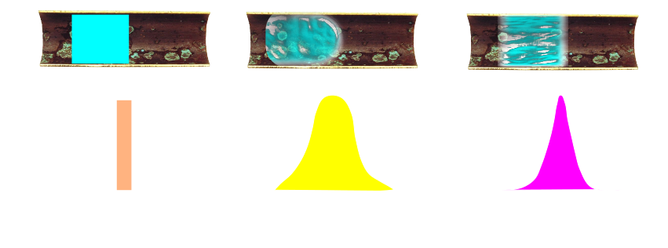

Hydrodynamics II:
Turbulence, Fouling & Residence
Dr Shane V Crowley
Press down for controls and right to progress
Interacting with the Slides
📺Full screen: press the F key
🎮View video controls: hover cursor over video
👩🎨 Draw: click icon or press C
🌈Pen colour: press X to cycle and Y to revert
💁 Options and Info: click icon or press M
Links to video below:
👉https://youtu.be/5rpv9-JNOuY
Fluids in a dynamic state can have different states of flow.
Increases in velocity are accompanied by increases in turbulence.
Viscosity opposes the tendency for flow to become chaotic.
Reynold's original experiment (kinda cool)

In laminar flow there are distinct regions of high/low velocity
Measurement Principle
Turbulence defined by Re (as you know)
$$\color{aqua}{Re = \frac{v \cdot D \cdot \rho}{\mu} \rightarrow \ pipeflow}$$
$$\color{violet}{Re = \frac{\rho \cdot N \cdot D^2}{\mu} \rightarrow \ stirring/mixing}$$
Residence times
Next Lecture
Continuity, Venturis and Flow Meters
shane.crowley@ucc.ie